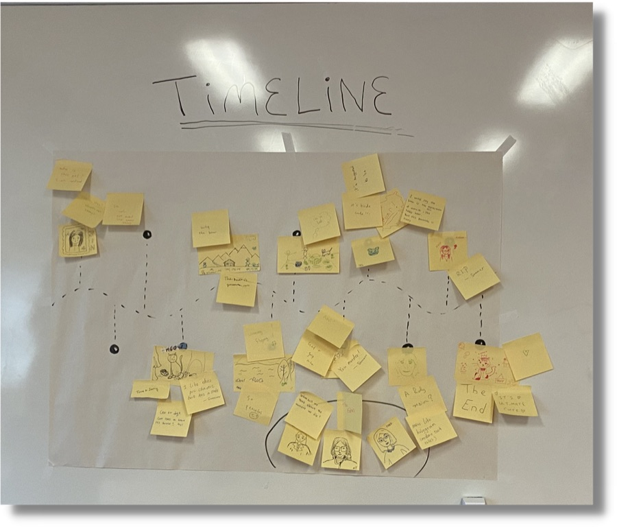
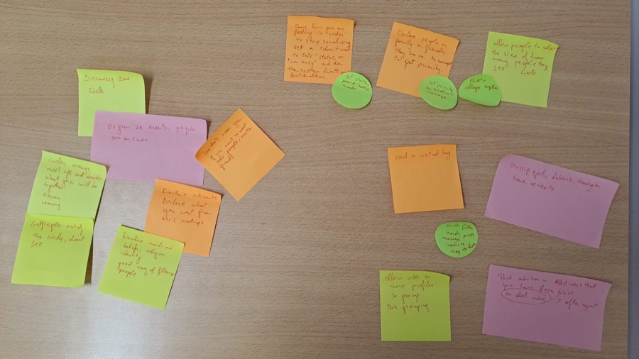
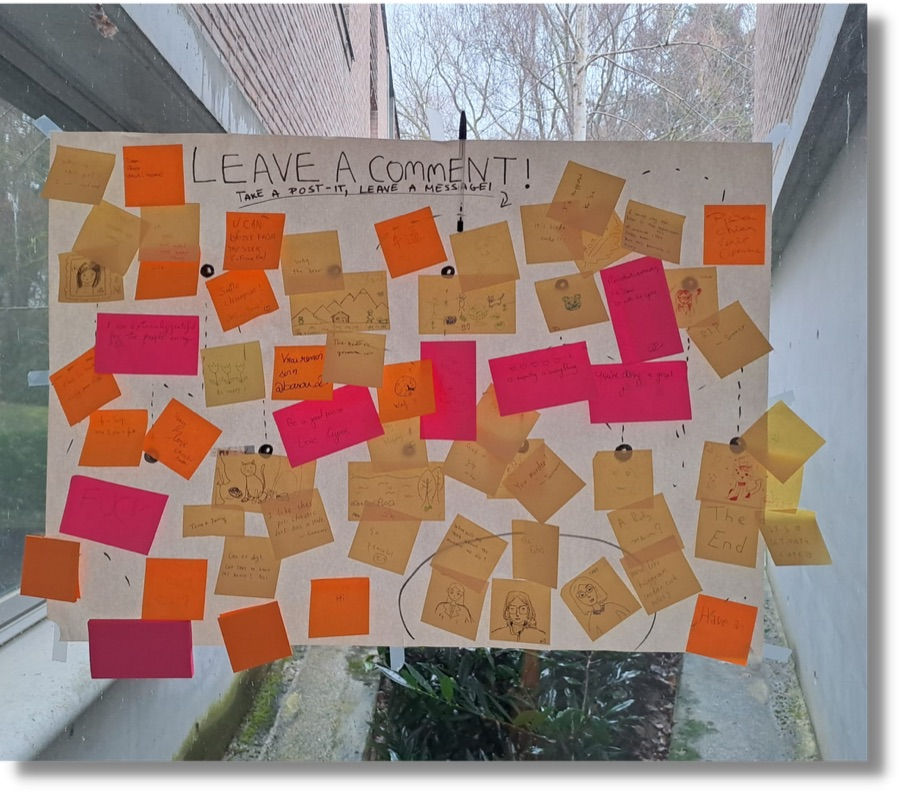
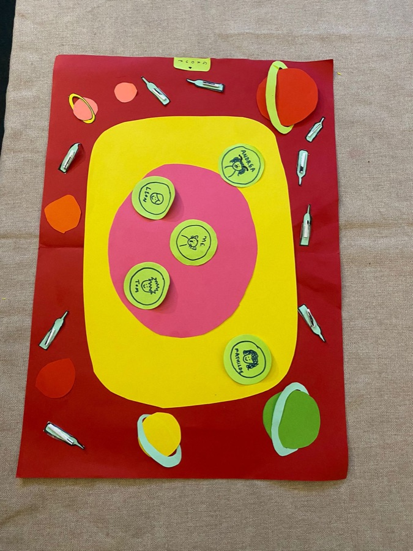

Anis Slimani
Inter-disciplinary Creative
Circles




Circles is a prototype of a socializing app that uses proximity and direct manipulation to create a personalized, group-oriented social experience, while reducing over-stimulation and addictive patterns.
A UX-design centred project, Circles reimagines Instagram as four distinct layers, each tailored to a different kind of social interaction. Built through ideation techniques and participatory user workshops, from low to high fidelity prototypes.

In collaboration with Yeajin AHN, Wenting BAI and Mihai BRANGA-PEICU
Circles
Circles is a prototype of a socializing app that uses proximity and direct manipulation to create a personalized, group-oriented social experience, while reducing over-stimulation and addictive patterns.
A UX-design centred project, Circles reimagines Instagram as four distinct layers, each tailored to a different kind of social interaction. Built through ideation techniques and participatory user workshops, from low to high fidelity prototypes.
In collaboration with Yeajin AHN, Wenting BAI and Mihai BRANGA-PEICU